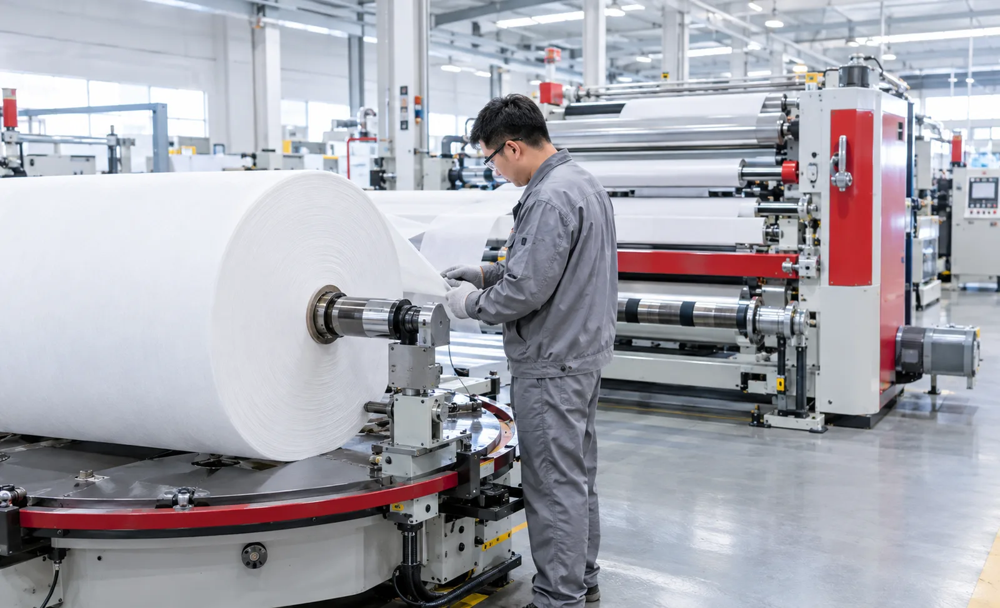
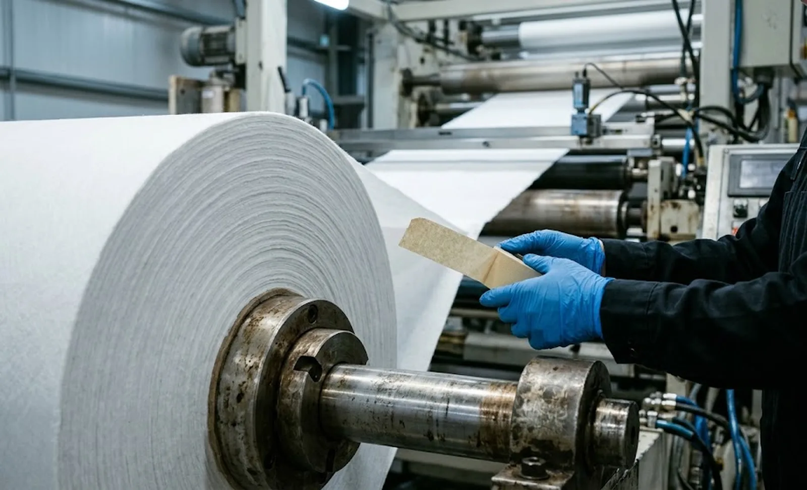

Published October 26, 2026 | By HDPTH Technical Editorial Team

Every converting plant lives with a number it rarely puts in a purchase order: how many times per shift the unwind stops for a roll change, and what each stop costs. On a single-unwind slitter rewinder the machine sits idle while an operator removes the empty core, loads a fresh jumbo and threads the web — several minutes each time. Yet buyers interrogate top speed and knives while accepting the splice method as fixed. It is not: it is a specification decision you control.
Why the splice method decides real availability
A jumbo roll runs out in a predictable number of minutes at line speed; divide shift length by that interval and you have splices per shift. Multiply by the average stop per splice and you have weekly downtime hours before any fault is counted. At high speeds the same jumbo is consumed in a fraction of the time, and the unwind becomes the dominant planned stoppage.
The subtler effect is splice quality: a failed joint opens under tension, breaks the web and forces a rethread that dwarfs the planned stop. Availability depends on how often you splice and how reliably each splice holds — two numbers the method governs.
Flying splicing: simple, fast, operator-dependent
In a flying splice the web is never stopped. The new roll is mounted on a paster arm or second unwind position and accelerated to web speed; adhesive is applied, and the old web is cut against the new roll at full line speed, transferring the web in a fraction of a second.
The attractions are real: no accumulator, small footprint, lower capital cost, decades of proven use. The constraints are equally real. Manual flying splices depend on operator timing, so reliability is high but hard to guarantee by contract. Paster arms have speed limits, and accelerating a heavy jumbo raises safety exposure. For robust materials and low splice frequency it remains legitimate; as speed and splice count rise, its variance becomes expensive.
Zero-speed splicing: the stopped-web method
Zero-speed splicing reverses the logic: the web is stopped at the unwind while the joint is made calmly. A web accumulator — a festoon of rollers that stores web during the unwind’s fast run — pays material out while the unwind decelerates to a standstill and rotates the new roll into position. Downstream, the line never notices: knives, nips and rewind continue at full speed, drawing web from the accumulator.
Because the splice is made at zero speed, the sequence can be automated end to end: pre-set adhesive application, automatic roll indexing, controlled acceleration and a monitored transfer. Reliability no longer depends on operator timing, which makes the method contractable — a supplier can promise a splice success rate and prove it at factory acceptance. The costs are the accumulator (floor space, rollers, drives and controls), tension handling through the stop-and-resume cycle, and a longer machine. For hygiene nonwoven lines and 24/7 operations with heavy jumbos, it usually removes the unwind from the downtime ledger.
Matching the splice method to your material and speed
Three variables settle the decision. First, splice frequency: compute jumbo run time at your real line speed and shift pattern. If a shift brings a few splices and the material is forgiving, flying splicing on a well-equipped paster is proportionate. Second, material sensitivity: low-elongation nonwovens, coated films and thin laminates suffer where tension spikes momentarily at transfer; a zero-speed cycle keeps those excursions inside a controlled envelope. Third, staffing: if the line runs nights with minimal crews, the operator-timed flying splice is what blocks automation.
A middle path is worth pricing: semi-automatic zero-speed configurations that accept a brief, controlled slowdown instead of a full-speed splice through a large accumulator. They reduce accumulator size and cost while retaining most of the reliability benefit, at a small throughput loss per splice.

The real cost of ownership: hardware, operators and consumables
Compare the methods on total cost, not invoice price. A flying-splice unwind saves the accumulator but spends continuously in three quieter accounts: operator training and its variance, splice failures with rethreading losses, and speed penalties where the paster limits line speed. A zero-speed unwind shifts that spend into capital — accumulator rollers and drives, splice hardware, sensors and guarding — and into consumables priced per splice, typically double-sided splicing tape.
Make the supplier price the whole cycle: accumulator storage length at maximum speed, compressed air demand, guaranteed cycle time, and the success rate written into the performance guarantee. A confident vendor answers with numbers and a test plan; hesitation tells you where the risk lands.
What to write into the specification
- Splice method per unwind position, with the success rate as a percentage over a defined number of consecutive splices.
- Splice cycle time at maximum roll diameter and weight, and line-speed behaviour during it.
- Accumulator storage length and tension behaviour through the stop-and-resume transition.
- Automatic adhesive application method and the tape specification approved for your material.
- Safety concept for the splice area: guarding and interlocks around the rotating table.
- FAT splice test on your material at production speed and maximum jumbo weight.
Place the splice in context: read it against our splice table buyer’s guide, weigh it with our comparison of non-stop unwinding configurations, and see these unwind options applied in our high-speed slitting machines.
Choosing between flying and zero-speed splicing?
Send HDPTH your jumbo dimensions, line speed and shift pattern. We will model splice frequency and availability for both methods and document the chosen unwind package in the offer itself.
Submit Your Project InquiryQuestions to put to every vendor
- What splice success rate will you guarantee, over how many splices, and on whose material?
- What is the splice cycle time at our maximum roll diameter and weight, and does the line slow during it?
- How long is the accumulator, and how is tension controlled through the stop-and-resume transition?
- Will the FAT protocol include witnessed splices on our material at production speed?
Frequently asked questions
What is zero-speed splicing on a slitter rewinder?
Zero-speed splicing is an unwind method in which the outgoing jumbo is decelerated to a standstill while the line keeps running, fed by a web accumulator. The new roll is joined under controlled conditions, removing operator timing from the critical path and raising reliability.
Is flying splicing good enough for my line?
Flying splicing is often good enough when splice frequency is low, the material tolerates an accelerated splice, and crews are experienced. It becomes the weak point at high line speed, with quickly consumed jumbos, delicate materials or unattended shifts. Run the arithmetic on splices per shift and downtime per splice.
Do I need a web accumulator for zero-speed splicing?
For a full-speed splice, yes: the accumulator supplies web while the unwind is stopped, and its storage must cover the splice cycle plus safety margin. Some lines accept a short controlled slowdown instead and use a smaller accumulator, trading throughput for capital cost.
What splice success rate should I demand from a supplier?
State the criterion as a percentage over a defined number of consecutive splices on your material, such as at least 98 percent over 50, and require the splice test at FAT with jumbos of maximum diameter and weight. Automatic zero-speed systems typically reach the high nineties; manual flying splices are harder to guarantee.
How much does zero-speed splicing add to machine cost?
The increment covers the accumulator, splice table or paster hardware, extra drives, sensors and guarding, scaling with width and speed. Payback: splices per shift times downtime per splice times margin per hour, against the capital delta and consumables. On fast lines with heavy jumbos the availability gain usually recovers the premium.
Sources
- AIMCAL: web handling and converting education resources, including unwinding and splicing
- TAPPI: web handling and roll change references for paper, film and nonwoven converting
- Converting Quarterly: articles on splicing systems, accumulators and unwind design
- ISO: machinery safety standards applicable to splice table guarding